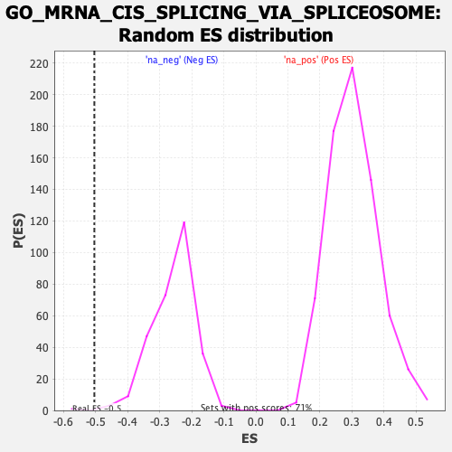

| | | Dataset | Recurrence |
| Phenotype | NoPhenotypeAvailable |
| Upregulated in class | na_neg |
| GeneSet | GO_MRNA_CIS_SPLICING_VIA_SPLICEOSOME |
| Enrichment Score (ES) | -0.5034597 |
| Normalized Enrichment Score (NES) | -1.9492464 |
| Nominal p-value | 0.0034364262 |
| FDR q-value | 0.20012368 |
| FWER p-Value | 0.837 |
Table: GSEA Results Summary
 Fig 1: Enrichment plot: GO_MRNA_CIS_SPLICING_VIA_SPLICEOSOME
Fig 1: Enrichment plot: GO_MRNA_CIS_SPLICING_VIA_SPLICEOSOME
Profile of the Running ES Score & Positions of GeneSet Members on the Rank Ordered List
| SYMBOL | RANK IN GENE LIST | RANK METRIC SCORE | RUNNING ES | CORE ENRICHMENT | | 1 | PRPF40B | 1625 | 1.379 | -0.0317 | No |
| 2 | CACTIN | 2176 | 1.223 | -0.0142 | No |
| 3 | RBM4B | 2424 | 1.167 | 0.0168 | No |
| 4 | RBM19 | 3392 | 0.978 | 0.0038 | No |
| 5 | SRSF4 | 3722 | 0.922 | 0.0214 | No |
| 6 | SRSF6 | 7032 | 0.465 | -0.1310 | No |
| 7 | SRSF10 | 7464 | 0.416 | -0.1375 | No |
| 8 | SRSF1 | 8229 | 0.328 | -0.1644 | No |
| 9 | NCBP2 | 8621 | 0.289 | -0.1737 | No |
| 10 | RBM4 | 9561 | 0.184 | -0.2150 | No |
| 11 | WBP4 | 9674 | 0.172 | -0.2143 | No |
| 12 | SART1 | 11003 | 0.027 | -0.2814 | No |
| 13 | SRSF8 | 12008 | -0.089 | -0.3296 | No |
| 14 | DCPS | 12559 | -0.153 | -0.3520 | No |
| 15 | SNRNP200 | 13755 | -0.315 | -0.4016 | No |
| 16 | NCBP1 | 14326 | -0.387 | -0.4163 | No |
| 17 | NCBP2L | 16025 | -0.639 | -0.4795 | Yes |
| 18 | PRPF39 | 16059 | -0.643 | -0.4572 | Yes |
| 19 | SRSF7 | 16247 | -0.672 | -0.4416 | Yes |
| 20 | SRSF9 | 16318 | -0.683 | -0.4196 | Yes |
| 21 | RBMY1J | 16450 | -0.707 | -0.3999 | Yes |
| 22 | PSIP1 | 16852 | -0.788 | -0.3910 | Yes |
| 23 | DDX23 | 16917 | -0.801 | -0.3643 | Yes |
| 24 | SRSF12 | 17233 | -0.874 | -0.3477 | Yes |
| 25 | RBM22 | 17436 | -0.920 | -0.3236 | Yes |
| 26 | SRSF3 | 17487 | -0.934 | -0.2912 | Yes |
| 27 | WBP11 | 17526 | -0.942 | -0.2579 | Yes |
| 28 | CWC15 | 17706 | -0.988 | -0.2301 | Yes |
| 29 | SFSWAP | 17714 | -0.990 | -0.1934 | Yes |
| 30 | SRSF5 | 18394 | -1.215 | -0.1828 | Yes |
| 31 | RBMY1F | 18402 | -1.218 | -0.1375 | Yes |
| 32 | PRPF40A | 19150 | -1.670 | -0.1133 | Yes |
| 33 | SRSF2 | 19226 | -1.757 | -0.0514 | Yes |
| 34 | SNRPC | 19248 | -1.780 | 0.0142 | Yes |
Table: GSEA details [plain text format]

Fig 2: GO_MRNA_CIS_SPLICING_VIA_SPLICEOSOME: Random ES distribution
Gene set null distribution of ES for GO_MRNA_CIS_SPLICING_VIA_SPLICEOSOME